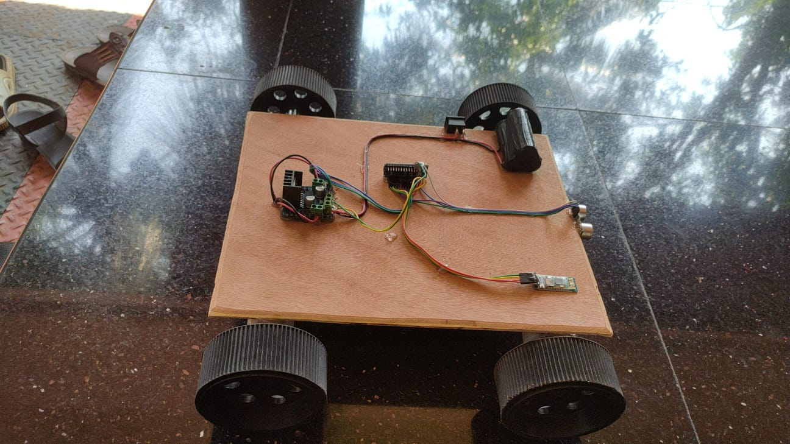

Embedded Systems • Arduino • PCB Design • IoT • Automation
Welcome to my engineering portfolio. I am currently pursuing the New Zealand Diploma in Engineering (Electronics Engineering) at New Zealand Skills and Education College (NZSE), Auckland, New Zealand.
GitHub ProfileI am an Electronics Engineering student with a background in Electrical and Electronics Engineering and a Bachelor of Commerce. My interests include embedded systems, Arduino programming, microcontrollers, IoT, automation, PCB design, electronic circuit analysis, and hardware development. I enjoy developing practical engineering solutions and improving my technical skills through projects.
Institution:
New Zealand Skills and Education College (NZSE)
Duration:
February 2025 – December 2026
Status:
Currently Studying
Currently pursuing a New Zealand Diploma in Engineering (Electronics Engineering), developing knowledge in electronic circuits, embedded systems, microcontrollers, programming, automation, and engineering design. Working on practical projects involving Arduino, sensors, circuit analysis, and hardware integration.
Institution:
St. Mary's Polytechnic College, Palakkad, India
Duration:
June 2021 – July 2023
Completed a Diploma in Electrical and Electronics Engineering with practical exposure to electrical systems, electronic components, circuit analysis, measurements, troubleshooting, laboratory activities, and engineering projects.
Institution:
Christ College, Irinjalakuda, India
Duration:
June 2016 – July 2019
Completed a Bachelor of Commerce degree with a focus on finance, accounting, business fundamentals, analytical thinking, and communication skills.

Project Type:
Academic Prototype
Objective:
Designed and developed a voice-controlled robotic vehicle prototype using Arduino. The project demonstrates embedded system fundamentals, Bluetooth communication, motor control, and hardware integration.
Hardware Components:
How It Works:
The smartphone sends voice commands through a Bluetooth
communication module. The Arduino processes the received
commands and controls the motor driver to operate the DC motors,
allowing the robotic vehicle to move in different directions.
Technologies:
Arduino,
Embedded C Programming,
Bluetooth Communication,
Electronic Circuits
Skills Developed:
Embedded Programming,
Circuit Connection,
Hardware Testing,
Troubleshooting
Project Outcome:
Successfully developed a working prototype demonstrating
embedded system design, wireless communication,
microcontroller programming, and hardware integration.
Let's Connect
I am open to connecting with engineering students, professionals, and people interested in electronics, embedded systems, and technology.
LinkedIn GitHub Email
LinkedIn
View LinkedIn Profile
GitHub
View GitHub Profile
Email
Send Email
This portfolio is created for educational and professional purposes. Personal information has been intentionally limited to protect privacy. Project images and descriptions are presented only to demonstrate academic engineering work and technical learning. Please do not copy, reproduce, distribute, or reuse any content without permission.